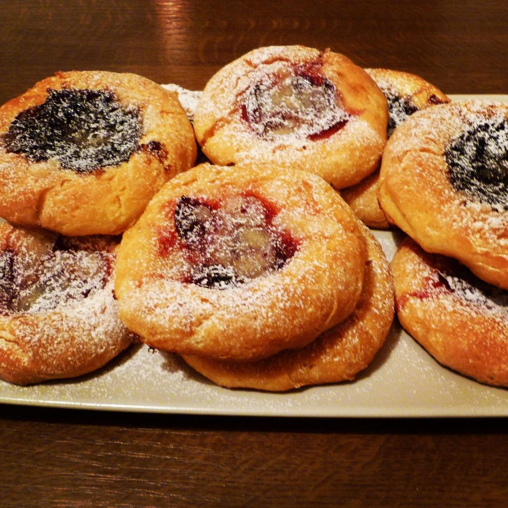

Ať použijete jakýkoli recept, pokaždé vytvoříte něco trochu jiného, než vytvořil autor onoho receptu. Tentokrát hanácké koláče se špetkou mojí duše ❤️ #hanackekolace #kolac #tradice #individual #kitchenaid #glutenfree #bezlepku #glutenfrei #sansgluten #patisserie #pecenijeradost #hobby #coffeetime #kaffee #pie #cake #kuchen #tarte